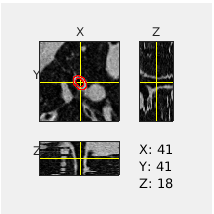
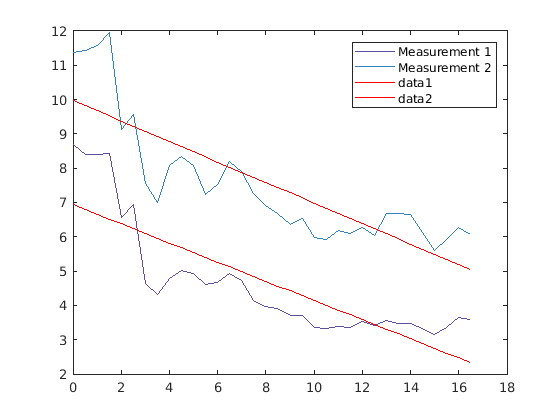

Contents
AirQuant FWHM (Clinical Airways)
This tutorial assumes you have run the quickstart tutorial and have built the `ClinicalAirways` object saved as `AQnet`.
Now that the backbone of the AirQuant analysis has been set up, we can work through subsequent steps of interpolating the source image for airway measurement. we opt to only demonstrate this on one airway, though in reality we want this to be done on every airway. We pick one airway id.
tic % You may need to run `AirQuantAddPath` before running this script to % configure MATLAB to run AirQuant. AirQuantDir = AirQuantAddPath();
See <a href = "https://airquant.readthedocs.io/">AirQuant Documentation</a> for help.
Single airway/tube patch interpolation and FWHMesl
we can access any 'tube' (airway) by its index, this allows us to access the methods of tubes.
atube = AQnet.tubes(10); % We run the method make the airway patch slices of this airway on the CT. usegpu = 0; atube.MakePatchSlices(AQnet.source, type='source', method='linear', gpu=usegpu); % set up parameters of FWHMesl % With our airway patches interpolated we now run the measurement of each patch. We a very straightforward method, FWHMesl. num_rays = 60; ray_interval = 0.2; % segmentation interpolation is also required for the FWHMesl method atube.MakePatchSlices(AQnet.seg, type='seg', method='linear', gpu=usegpu); atube.Measure('AirwayFWHMesl', num_rays, ray_interval); % We can interactively visualise the CT image along the airway patches with its estimated ellipse fitting. % (opens externally) figure; atube.OrthoView();
Basic visualisation
We can plot any measurement along the airway against its arc-length
figure; atube.plot(Y='diameters'); % though this is the default options for X and Y, we will be explicit.
Export individual airway/tube
atube.ExportCSV('example.csv'); % print first 10 rows of example.csv T = readtable('example.csv'); T(1:10,:)
ans =
10×8 table
patchprop_parapoints patchprop_arcpoints patchprop_hydraulic_diameter_1 patchprop_hydraulic_diameter_2 diameters_1 diameters_2 areas_1 areas_2
____________________ ___________________ ______________________________ ______________________________ ___________ ___________ _______ _______
0 0 4.1821 5.5801 8.6861 11.376 59.258 101.65
0.51138 0.5 4.0957 5.6672 8.4 11.423 55.417 102.47
1.0202 1 4.099 5.7358 8.3941 11.577 55.34 105.27
1.5261 1.5 4.1442 5.9386 8.4346 11.961 55.876 112.36
2.035 2 3.2137 4.4179 6.5737 9.1138 33.939 65.236
2.5531 2.5 3.4288 4.7814 6.9293 9.5775 37.712 72.043
3.0845 3 2.234 3.7067 4.633 7.5485 16.858 44.752
3.6301 3.5 2.1077 3.474 4.328 6.9874 14.712 38.346
4.184 4 2.3562 4.0027 4.7744 8.0743 17.903 51.203
4.7337 4.5 2.4931 4.1682 5.0059 8.3534 19.681 54.804
process all airways to make patches
We can process all airways now. This can take somewhere between 1-4 hours to run. By default it will try to run on GPU if available which can speed things up. uncomment the lines below to run.
% AQnet.MakeTubePatches(method='linear', gpu=usegpu) % AQnet.Measure('AirwayFWHMesl', num_rays, ray_interval); % We can now visualise the characteristics derived from diameter measurements. % figure; AQnet.Plot(colour='lobe', weight='meandiameter', weightfactor='10') toc
Elapsed time is 23.171602 seconds.